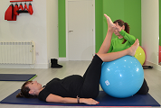
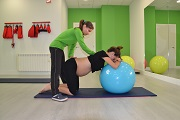
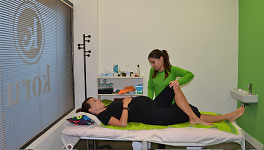

La preparación al parto o preparto consiste en una serie de ejercicios de gimnasia dirigidos por una fisioterapeuta, así como
aprender a realizar el masaje perineal para preparar la zona pélvica para el parto.
Las clases de gimnasia pueden empezar a partir de la semana 24 de gestación, en las cuales la embarazada se familiariza con las
contracciones, las posiciones más idóneas antes y durante el parto y ejercicios respiratorios que contribuyan a tranquilizar a la
madre.
¿En qué consisten las clases:
- Ejercicios de tonificación y relajación del suelo pélvico: ejercicios de Kegel
- Entrenamientos respiratorios para acompasar contracción-respiración
- Liberación de la pelvis, a través de movilizaciones activas o asistidas por el/la
fisioterapeuta
- Activación de la circulación: tanto con ejercicios activos como con técnicas de
masoterapia como el drenaje linfático manual que nos ayuda a mantener las piernas deshinchadas
- Aliviar los dolores musculares que aparecen por los cambios, especialmente a nivel
lumbar: los masajes, las movilizaciones suaves y el calor local nos resultarán de gran ayuda
- Prevenir el estreñimiento y las hemorroides


Por otra parte, gracias al masaje perineal y los ejercicios musculares del suelo pélvico prepararemos la musculatura del
suelo pélvico, lo que nos ayudará a:
- Prevenir la incontinencia urinaria que se produce por el peso del bebé sobre tu vejiga
- Tener un parto más fácil al poseer un mayor control sobre nuestro cuerpo, evitando
desgarros e incluso evitar la episiotomía, disminuyendo el dolor después del parto
- Aumento de la circulación sanguínea en la zona rectal, facilitando la cura de la
episiotomía en caso de producirse y disminuir las hemorroides
- Prevenir prolapsos
- Volver a las actividades de la vida diaria sin problemas de incontinencia
- Ayudar a la vuelta a la vida sexual normal después del parto
Además trateremos en consulta todas las patologías que surjan durante el embarazo (lumbalgia, ciática, piernas sansadas...)
